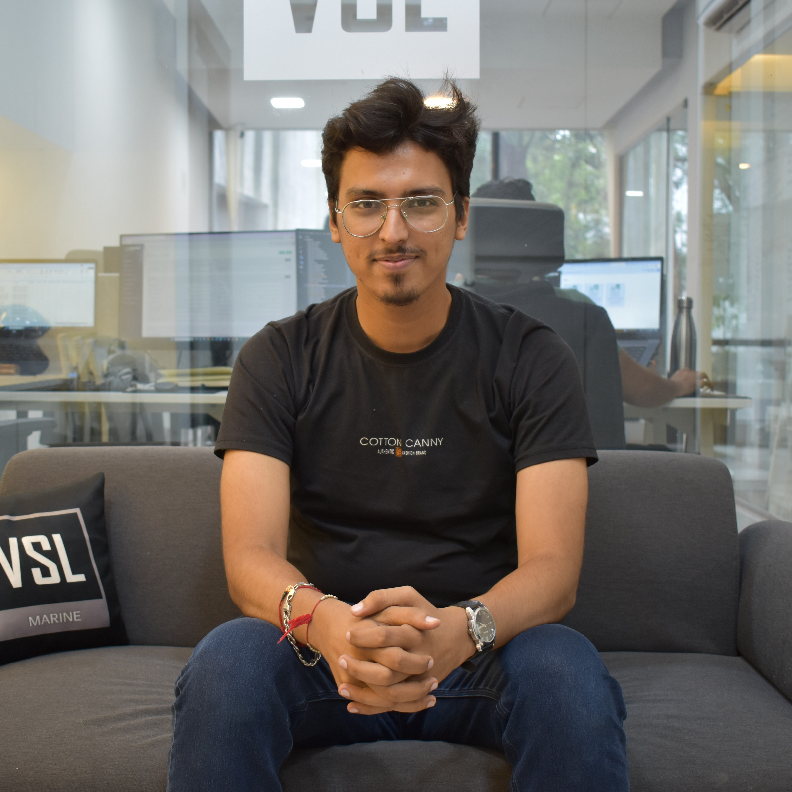

Mr. Parth Panchal
Back-End Developer
+91-7303513231 | panchalparth93@yahoo.in | Vile Parle (East), Mumbai,
Maharashtra

Summary
I aspire to build a successful career as a web developer, focusing on
multiple live projects while continuously learning new programming
languages. My goal is to achieve financial independence and stability,
empowering me to thrive both personally and professionally. With diverse
experience in management and technology, I'm dedicated to leveraging
skills in web development
Technical Knowlogy
| HTML |
CSS |
Bootstrap |
JavaScript |
| React |
Angular |
PHP |
MySQL |
| MongoDB |
firebase |
Canva |
Photoshop |
Professional Experience
-
Ajay Infotech | Back-End Developer | May 10025 - Present
-
Collaborates with front-end developers to integrate user-facing
elements with server-side logic.
-
Optimizes application performance by writing efficient code,
implementing caching, and minimizing server load.
-
Maintains code versioning tools like Git for collaboration and
version control.
-
VSL Marine Technology Pvt. Ltd | Graphic Designer | Sept 10023 - April
2025
- Implement a consistent color scheme and typography.
- Enable conditional validation based on user input.
-
Dream Properties | Executive Sales Manager | Aug 2017 - Dec 2021
- Designed floor plans for various container ships.
- Created 3D tours using 3DVista.
- Utilized Photoshop for image enhancements
-
Event Management | Promoter | Jan 2015
- Promoted Jivraj9 Tea for ten days in Santacruz.
- Promoted Fun Foods Mayonnaise for ten days in Goregaon.
-
Metal Craft | Assistant Manager | Jan 2012 - Dec 2015
- Maintained records and oversaw employee activities.
- Managed finances related to material procurement.
Education
-
Sheth L.U.J and Sir M.V college of Arts and Science | BSC IT - Mumbai |
May 2024
-
Shri Madhav Rav Bhagwat Junior College of Science | H.S.C - Mumbai | Feb
2015
-
St Xavier High School and Junior College of Commerce | S.S.C - Mumbai |
March 2012
Courses
-
Internshala | MERN Stack Developer
-
Completed Full Stack Developer training with a percentage of 83 for
Front-End and 77 for Back End.
-
Internshala | Angular
- Completed Angular training with a percentage of 80.
Projects
-
Portfolio Website | Own Projects | March 2025 - April 2025
- Developed a portfolio using React and ApexCharts.
-
Incorporated a third-party form from W3Schools to enhance
functionality.
-
Gained practical experience in building interactive and data-driven
web applications.
-
PRN Real Estate | TY-BscIT Projects | June 2022 - March 2023
-
Developed a dynamic real estate website where users and property
owners can easily add, delete, update, and view properties.
-
Enabled customers to provide feedback through the admin panel.
-
Utilized HTML, CSS, and JavaScript for the front-end, and PHP and
MySQL for the back-end.